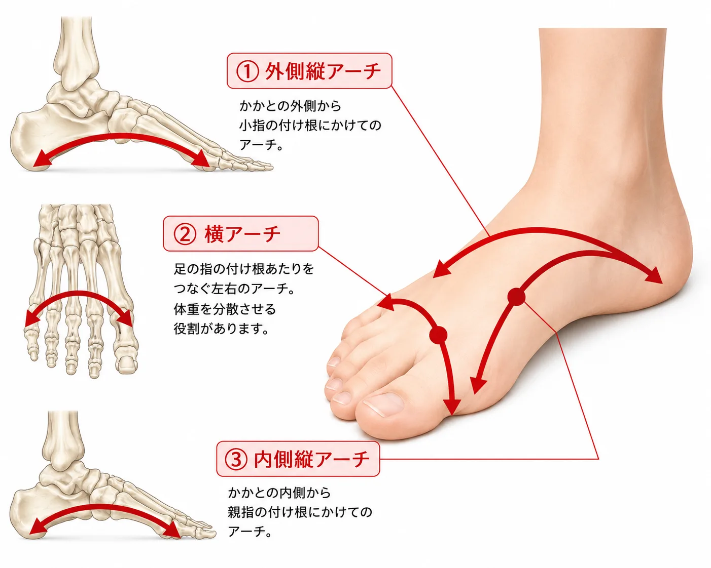

内側縦アーチは、踵から親指側へ続く、一般に「土踏まず」と呼ばれる部分です。外側縦アーチは、踵から小指側へ続く、比較的低い縦方向の支えです。横アーチは、足の内側と外側を横につなぐ支えで、前足部にも関係します。
3つは独立した部品ではありません。立つ、体重を受ける、前へ進む、蹴り出すという動きの中で連携し、地面からの衝撃を吸収しています。土踏まずの高さだけ、フットプリントの形だけで良し悪しを決めず、体重をかけた足、指、踵、歩行、靴の減り方を合わせて見ます。
加齢とともに筋肉や靭帯がゆるむこと、体重の増加、運動不足で足を支える筋肉が弱くなることなどが、アーチの低下につながる場合があります。生まれつきアーチが低い方もいれば、けがや偏った体重のかけ方、立ち仕事や妊娠・出産などの生活の変化がきっかけになる方もいます。
アーチが低下すると、着地の衝撃を吸収しにくくなり、足だけでなく膝や腰への負担が増えることがあります。反対に、アーチが高すぎる場合も、衝撃吸収がうまくいかず、足裏の一部に負担が集中することがあります。
- 濡らした足の裏を紙や床につけたとき、土踏まずの部分がどれくらい写るか
- 立ったときに、踵が内側へ倒れ込んでいないか
- 靴底が内側だけ、あるいは外側だけ極端にすり減っていないか
- 長く立つ、歩くと、足の裏や足首が疲れやすくないか
いずれもご自身で結論を出すためのものではなく、ご相談の際に状態をお伝えいただくための手がかりです。現在の靴は処分せず、ご相談時にお持ちください。
- 踵の支え：ヒールカウンター（踵まわりの芯材）がしっかりした靴は、踵の傾きを抑える助けになります。
- アーチを支える構造：土踏まず部分を支える形状の靴やインソールは、衝撃吸収を助けます。
- クッション性のある靴底：薄く平らなだけの靴底は、衝撃吸収もアーチの支えもないため、疲れが直接足に伝わりやすくなります。
アーチの高さや崩れ方は一人ひとり違うため、既製のインソールで足りる場合と、オーダーメイドが向く場合があります。ご相談では、歩行の観察をもとに、ディモコ・インソールを含めてご提案します。
足の計測、フットプリント、靴と歩行の観察を行い、アーチの状態に合わせた靴・インソールを提案します。診断や治療ではありません。
痛みが続く、急に腫れた、片足だけ急にアーチの形が変わった、しびれがある場合は、整形外科などの医療機関へご相談ください。糖尿病や血流の問題がある方は、自己判断でインソールを使う前に医療専門職へご確認ください。
靴が当たる、歩くと疲れる。まずはご相談ください。
通常の足と靴のご相談は、わたしが予約制で承ります。